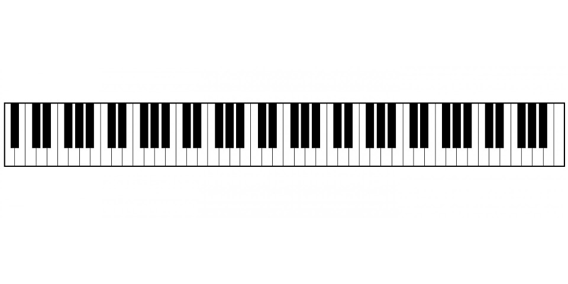

Keyboard
Keyboarden är ett elektroniskt instrument eftersom att ljudet framstår med hjälp av elektricitet. Den låter som ett piano men det är inget piano. Man kan säga att den är som en simplare version av ett piano eftersom att den brukar ha mellan 49 och 73 tangenter.
Det är ett låg prisalternativ till professionella digitalpianon och synthesizrar. Keyboarden riktar sig åt nybörjare och mellannivåmusiker i hemmet. Det som är skillnaden mellan en synt och en keyboard är att en synt är gjord för att skapa och slå samman ljud. Medan en keyboard redan från början inehåller olika ljud ex.(piano, elpiano, syntljud, stråkar, trumkomp, med mera) som är färdiga för att spela upp.
En keyboard är mycket billigare än en synt eller ett piano och det är därför den är så vanlig att ha hemma. För att en synt brukar kosta nästan dubbelt så mycket som en keyboard.
